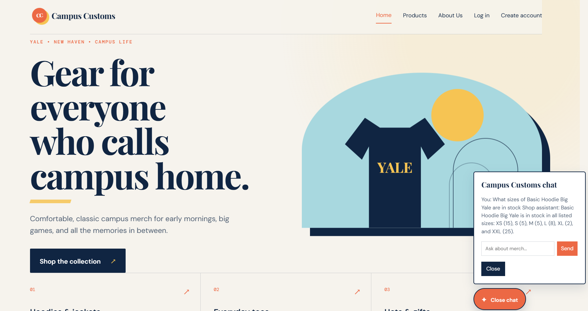
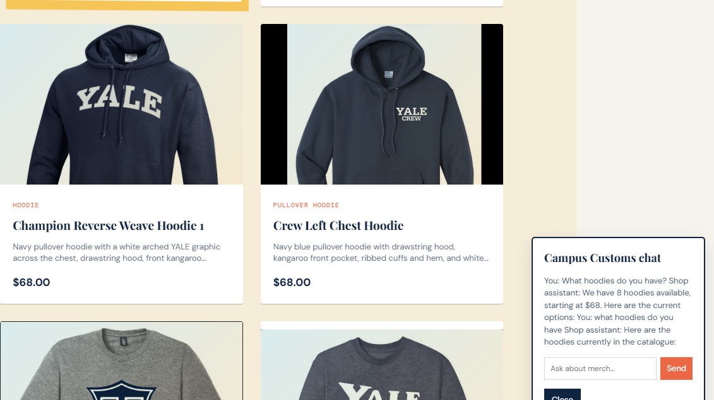
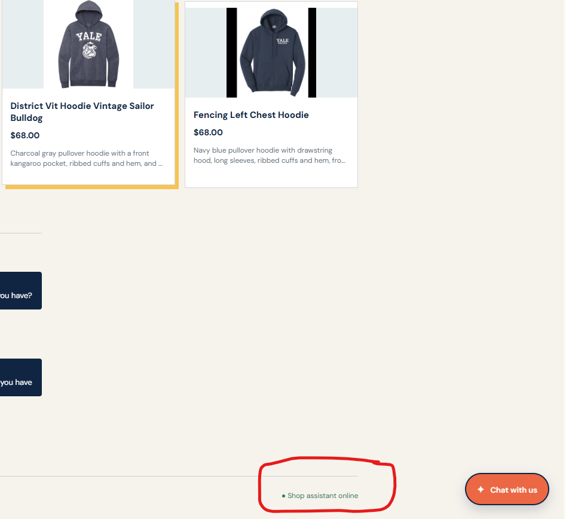

Add the three screenshots to output/app_check_images/ using the filenames below. This page intentionally uses placeholders until screenshots are provided.

app_check_images/inventory.png.This check should prove that the chatbot reports the item's actual price and size-level stock from the database rather than inventing values.

app_check_images/search_cards.png.This check should prove that a question such as “What hoodies do you have?” produces real matching product cards on the page with images, names, prices, and short descriptions.

app_check_images/usability.png.This check should prove that shoppers can filter products by name, garment type, or description instead of scrolling through the entire catalogue.